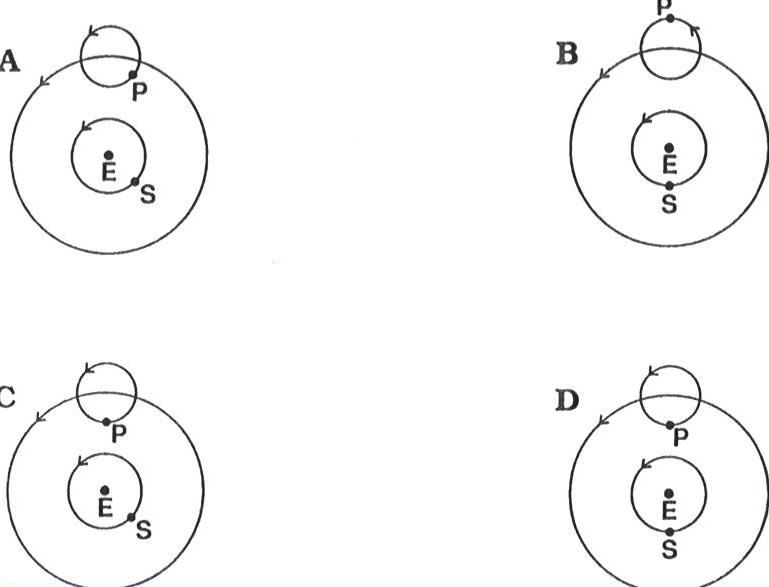

Figure 5: Ptolemaic a priori flexibility for a superior planet. Tycho's "great concern and Frisius's "fact-in-itself " enigma is illustrated here in this adaptation from Owen Gingerich, 1991. In the Ptolemaic system, there is no a priori reason why a planet at opposition could not be positioned in locations other (A, B, C) than that shown in D, the perigee position.